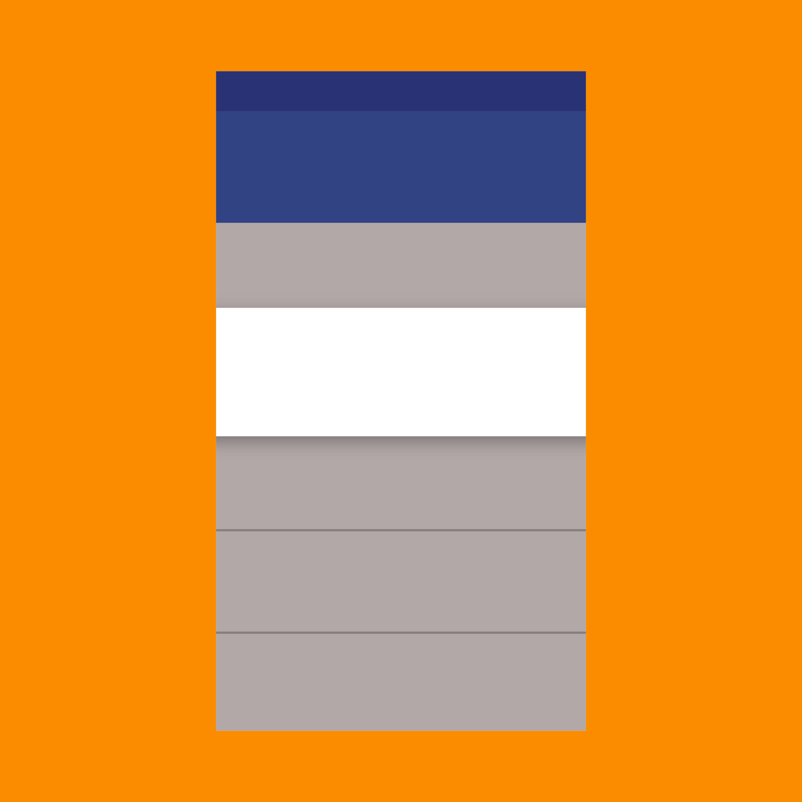

导航转换是在应用的不同状态间移动，比如从高等级的视图进入详情视图。
绝大多数（并非全部）转换都是在自然的等级之间。这些时刻应当能够通过应用的不同状态来反应出用户的旅程。
等级和海拔
当元素升高并且展开，海拔的改变指示出了元素的焦点从父级转到子级。
同级转换出现在同级的元素之间，通常不会有海拔的改变。

绝大多数（并非全部）转换都是在自然的等级之间。这些时刻应当能够通过应用的不同状态来反应出用户的旅程。
当元素升高并且展开，海拔的改变指示出了元素的焦点从父级转到子级。
同级转换出现在同级的元素之间，通常不会有海拔的改变。